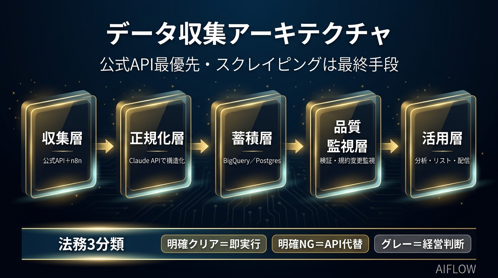

AIフローアーキテクト ご提案資料
データ収集 戦略整理 ご提案
公式API最優先・スクレイピングは最終手段
求人情報・企業情報・Googleマップを「どう取得するか」を、
合法性・コスト・工数の3軸で意思決定できる状態に整理します。
株式会社イノーバ様
データ活用 新規事業
壁打ち・方針整理フェーズ
本日の論点（壁打ちアジェンダ）
この資料は結論の押し付けではなく、貴社が判断するための材料の整理です。
データソース別 取得方針マトリクス
「スクレイピングできるか」ではなく「合法に・いくらで・どの鮮度で取れるか」で設計します。
| 対象 | 第一手段（推奨） | 難易度 | 論点・コスト感 |
|---|
| 企業情報 |
国税庁 法人番号API（約500万社・無料）／ gBizINFO（約400万件・無料・出典明記で商用可） |
低 |
公式オープンデータでほぼ全件を合法取得。スクレイピング原則不要 |
| 求人情報 |
媒体公式API／フィード／提携。無ければ媒体ごとに可否を1次切り分け |
高 |
規約違反・DB著作権・不正競争防止法が論点。鮮度が命（掲載は2〜3週で消滅） |
| Googleマップ |
Google Places / Maps Platform API（規約準拠・有料） |
中 |
スクレイピングはToS明確に禁止。API前提で件数・頻度を絞る予算設計が必須 |
全体アーキテクチャ（5層）
公式APIを軸に、例外時のみ限定的に補完。規約変更の監視まで含めて運用に耐える構成です。

収集層 → 正規化層 → 蓄積層 → 品質監視層 → 活用層／土台に法務3分類
法務3分類フレーム（最大の差別化）
リスクを「消す」のではなく、経営として「意思決定できる状態」に整理します。
① 明確クリア
公式API・オープンデータ。出典明記等の条件を満たせば即実行。
② 明確NG
規約で明示禁止（Googleマップ等）。スクレイピングせずAPI・代替に置換。
③ グレー
規約が曖昧・DB著作権が論点。件数／頻度／用途を限定し、経営判断にエスカレーション（弁護士確認を推奨）。
本日のゴール：まずは Phase 0（方針整理）を、週1〜2時間・低リスクな入口として始めることをご提案します。Phase 1 以降は、整理した方針と費用対効果を見たうえで貴社にご判断いただけます。金額は現時点の目安であり、対象件数・鮮度の確定後に正式見積りをご提示します。